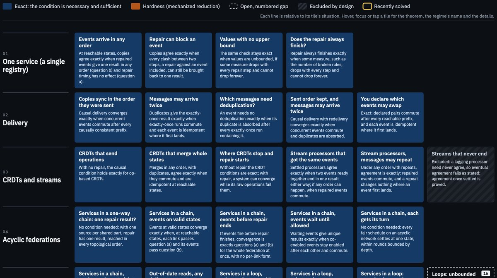

When do copies of your data still agree?
Systems that keep copies across regions, devices or services often accept a write and then repair it: cap the stock, clamp a balance, run a compensating step. Every copy can run that repair correctly and the copies can still disagree. This work gives the exact conditions for when they agree, every one machine-checked, and gsm checks them at build time for systems that repair in the same transaction as the write.
Normalization confluence: an exact theory of when repair can replace commutativity.
Before running either system, it predicted which delivery orders bring a deleted document back in CouchDB and PouchDB. All 216 observations matched, and a behavior found along the way is a CouchDB bug, confirmed by a maintainer.
Same events, different results
Replicas apply the same events in different orders, because networks delay, reorder and retry messages. After each event, every replica runs the same repair to restore its invariants. Do replicas that have seen the same events end in the same state?
Not always. A shelf holds 5 items and has 4 in stock. Two events arrive, "add 3" and "remove 1". Each replica records an update first, and then the repair caps the stock at 5.
Replica A applies "add 3" (7), repairs (5), then "remove 1": 4. Replica B applies "remove 1" (3), then "add 3" (6), repairs: 5.
Same events, same repair, different stock.
The theory says which condition fails. A replica can hold an unrepaired value like 7 for a moment, when an event lands before the repair has run, for example when a background job does the repair (guide, section 4). Take the raw state 7, just after "add 3". Repairing first and then removing 1 gives 4. Removing 1 from the raw 7 and then repairing gives 5. The one-event condition below, state descent, requires these two to agree, so this shelf cannot converge in every order. gsm finds a diverging order at build time.
Who should care
Anyone whose system applies the same writes in more than one place and repairs them afterwards:
- active-active databases and multi-region writes;
- offline-first apps that sync when they reconnect;
- queues that retry and reorder messages;
- sagas with compensating steps;
- reconcilers and Kubernetes-style controllers.
The engineer's guide shows how to check your own system.
A prediction about real software
CouchDB and PouchDB replicate documents between databases. A model of each, built through the framework, computed which delivery orders bring a deleted document back. The prediction was committed before either system was run. Then both systems were run: all 216 observations matched. A larger, unscored scenario found an error in the CouchDB model, since corrected. That error led to a CouchDB behavior where a validation function that accepts everything changes the replicated result, now reported upstream and confirmed as a bug by a CouchDB maintainer.
The computed orders: 6 of 24 in CouchDB, none with per-update pruning off, 12 of 24 in PouchDB. Each order ran three times. The real CouchDB replicator reaches the same behavior. Details: P3 · replicator · apache/couchdb#6162
When the repair runs matters
If the repair runs in the same transaction as the event, check that event order does not change the result (question (b) in the guide). If it runs in a background job or a reconciler, also check that repairing early or late does not change the next event's result (question (a)). A system can be correct with an in-transaction repair and break with a background reconciler. The guide's section 4 shows one.
Proof: atomic_exact · atomic_derived_from · atomic_not_descent
Checking a system with gsm
gsm is a Go library. You write a model of your system in Go: its variables, each with a finite range, its business rules with their repairs, and its events. The model can live in a test next to your service; it does not have to be your production code. At build time gsm checks every state of that finite model, and either accepts it or names the order that diverges. It also checks a rules change before deployment, under the delivery the system actually has.
go get github.com/blackwell-systems/gsm
Here is the shelf. gsm reports the first failing state it finds, counting up from the bottom of each range. At the bottom of any range, "remove 1" has nowhere to go, so this model's stock starts at the story's 4 items and ends at 8, the most "add 3" can reach from a full shelf.
r := gsm.NewRegistry("shelf")
stock := r.Int("stock", 4, 8)
r.Invariant("fits_on_shelf").
Watches(stock).
Holds(func(s gsm.State) bool { return s.GetInt(stock) <= 5 }).
Repair(func(s gsm.State) gsm.State { return s.SetInt(stock, 5) }).
Add()
r.Event("add_3").Writes(stock).
Apply(func(s gsm.State) gsm.State { return s.SetInt(stock, s.GetInt(stock)+3) }).Add()
r.Event("remove_1").Writes(stock).
Apply(func(s gsm.State) gsm.State { return s.SetInt(stock, s.GetInt(stock)-1) }).Add()
_, report, err := r.Build()err: gsm: Compensation Commutativity (CC) check failed
WFC: PASS (max repair depth: 1)
CC (Compensation Commutativity): FAIL
Events: (add_3, remove_1)
State: {stock=4}
add_3→remove_1: {stock=4}
remove_1→add_3: {stock=5}
Saturation: event "add_3" clamps "stock" into its range on 3 state(s) (silently; an invariant testing the bound never sees the overflow)
Saturation: event "remove_1" clamps "stock" into its range on 1 state(s) (silently; an invariant testing the bound never sees the overflow)The build refuses the machine, and the failure it names is the story's: from 4 in stock, "add 3" then "remove 1" gives 4, and the other order gives 5. In the report, WFC is question (c): the repair always finishes. CC is question (b): repaired events give the same result in either order. A gsm machine runs each event and its repair as one step, so its CC line checks (b) only (guide, section 4).
The Saturation lines mark the ends of the model's range: a write past 8 or below 4 is held at the end. In the reported run, "remove 1" at 4 holds the stock at 4 instead of 3. The result is the same, because 3 + 3 and 4 + 3 are both over the cap and the repair brings both to 5. Output from gsm v0.16.0, abridged by removing lines.
No Go model? The guide's property tests check the same three questions in an ordinary test suite, with no setup. They sample states, so they can find a failure but cannot show that none exists.
A system that converges behaves like a CRDT on its repaired steps. What gsm adds is a way to build one: write the operations you want and the rules they must keep, and the build either proves every order converges or names the order that fails. Large systems are checked in pieces (groups of variables that change together, one item of a collection, one link of a network of registries), so the cost depends on the largest piece, not the whole system.
The Convergence Atlas
Every regime the theory covers, on one map: free and causal delivery, CRDTs and streams, federations, networks with cycles, lossy channels, reconfiguration, composition. Each tile is an exact condition, a proof that no efficient one exists, or a numbered open problem, and opens to its theorem and counterexamples. Some open problems span more than one tile.

For researchers
The research summary: the three conditions, how they relate, the framework, what is proved, how it was tested, and what is open.
Three conditions
Raw states may differ along the way; what has to agree is the result after repair. Write N for the repair. The theory proves a condition at each of three scales: necessary at one event when events can arrive mid-repair, exact for a single registry when combined with the condition on sequences, and exact for infinite runs on finite state spaces.
State descent
Question (a). Does repairing early or late change what the next event produces?
Applying an event to a state or to its repaired form gives the same result after repair: N(e(N x)) = N(e x). Convergence requires it.
History descent
Question (b). Does reordering events change the repaired result?
Every reordering the delivery model allows gives the same result after repair: free, causal, at-least-once, or declared independence.
Canonical recurrence
For systems whose repair may never stop. Does every fair run settle on one result?
On networks where repair may never stop, every fair run eventually stays on one repaired result.
How the conditions relate
- descent_not_history: state descent without history descent. Repair does nothing, and two events that do not commute separate a reordering.
- history_not_descent: history descent without state descent. One event, so every reordering is trivial, while the event does not respect what repair identifies.
- history_from_descent: given state descent, history descent of the raw runs is the same question about the repaired runs.
- nd_derived_from: with terminating repair, every run from a start has one result exactly when history descent and state descent both hold there.
Every condition is exact: necessary and sufficient, with a counterexample for each hypothesis. CRDTs are the case where repair never runs. Repair enlarges which operations can be used: some converge only with repair, and no CRDT built from the same operations converges. The resulting behavior is itself a CRDT on the repaired steps; what repair adds is a way to build it from operations that do not commute.
Three layers
The same structure organizes the results across regimes. Three layers, and three proved interfaces between them:
Execution
Which executions count as the same. One theorem recovers the exact results for causal, at-least-once and declared-independence delivery, and for reconfiguration.
Consistent states
The fixed points of repair are exactly the solutions of a constraint problem, which places consistency in known constraint-satisfaction algebra.
Long-run behavior
Whether runs settle, and where. Oscillation, livelock and settling on the wrong state are classified in one vocabulary.
- A to B: an event must respect consistency only after repair, not strictly. Strict commutation is sufficient but not needed, and a real federation shows the difference. xu_iff_respects · strict_not_necessary
- B to C: a system can have exactly one consistent state and still never reach it. flip2_unique_solution_livelock · settled_canon_exact
- A to C: local conditions plus termination give convergence (Newman's lemma), and fair schedules alone do not, exactly when some action is starved forever. newman_bridge · four_point_fair_not_confluent · fair_sn_exact
- The compensation-commutativity theorem is the base case. The core single-registry theorem is derived from the framework's kernels, unchanged: the one-event condition is state descent and the commutation condition is history descent. The framework was built after that theorem, so this is a derivation, not a prediction. nd_derived_from · nd_cc_exact
What's proved
Checked against known results and real software
Recovering results the framework was built from shows organization, not reach. So the test is stricter: freeze every existing proof file, fix the pass criterion in advance, and recover a classical theorem from outside the repository. Each step the frozen framework could not express is reported as a leak.
Dijkstra's self-stabilization (1974)
A finite system stabilizes under fair schedules exactly when no fair loop leaves the legitimate states: one line from layer C. Dijkstra's K-state token ring follows for every ring size with K at least the number of machines, under fair and arbitrary schedules. Three leaks, all stated.
CRDT strong eventual consistency
Shapiro, Preguiça, Baquero and Zawirski (2011), and Gomes and others (2017). Op-based: passed, a short bridge from layer A with a repair that does nothing; replicas converge exactly when concurrent operations commute where they can be delivered. State-based: proved, but the merge of two replica states is not a kernel event, so that step leaked out of the frozen framework.
A preregistered prediction (P2)
Committed before any test: a matching market with exactly one stable matching can still cycle forever when every pair gets its turn. Confirmed at 3 by 3 and proved in Coq; about a quarter of 4 by 4 markets with one stable matching cycle.
A computed prediction about real software (P3)
Committed before either system was run: CouchDB and PouchDB bring a deleted document back on exactly the delivery orders a model built through the framework computed. All 216 observations matched. The counts and the upstream report are above.
Invariant confluence
Bailis and others (VLDB 2015): a set of transactions is invariant confluent exactly when the merge is a polymorphism of the reachable valid states, one short step from layer B. A polymorphism of the whole invariant is enough but not needed: two versions under set union with "not both present" is invariant confluent for "add a" while union breaks the invariant. Necessity of their Theorem 1 holds in a replica model; for an arbitrary system it needs a partition model the framework lacks, stated as a leak.
The CRDT test is the weakest: the repository proved CRDT convergence directly before the framework existed. The framework stays frozen, its files hash-checked in CI, while predictions written down before any test are checked (how).
Prior work and contributions
- Newman's lemma
- Trace theory for reorderings
- Constraint-satisfaction algebra: polymorphisms and sections
- Fair cycles and fair termination
- Exact conditions for governed convergence across the regimes, each hypothesis shown needed
- The regime map: exact, provably hard, or listed as open
- All of it mechanized, axiom-free
- The framework, tested on outside theorems with its proofs frozen
- Normalization confluence derived from the framework's kernels, without circularity
- Two preregistered predictions confirmed (P2, P3), committed before their tests
- New mathematics in the tools
- That the framework derives answers by theorem alone. Its predictions were a bet that came out right (P2) and a model computation checked against running software (P3).
- Exact long-run results beyond finite state spaces
Open problems
Each is listed in the regime audit with the progress made on it.
- Gap 3Settling without a root on networks whose maps are not invertible.
- Gap 16Distributed propagation beyond its current hypotheses: events mixed with rootless propagation on cycles, monotone cycles with no finite height, repair as separate steps on cycles.
- Gap 17Rootless dynamics with lossy maps: whether every fair order reaches a quiescent state, and whether that state is unique.
- Gap 18Existence and counting of fixed points in the resolver reading without a spanning root.
- Gap 19Composition beyond collapsing to an acyclic network, in the cases not yet closed.
- Gap 20Reconfiguration inside a run: rules or topology changing while events are in flight, in the cases not yet closed.
- Gap 21Propagation over channels that delay, reorder or duplicate, in the cases not yet closed.
Read more
Papers
- Normalization confluence: an exact, mechanized theory of when repair can replace commutativity (2026, version 3; doi:10.5281/zenodo.23311489; source). The main result, the three-layer framework, and its tests on outside theorems and preregistered predictions.
- Normalization Confluence in Federated Registry Networks (2026, version 2; doi:10.5281/zenodo.18677400)
- Normalization Confluence for Registry-Governed Stream Processing (2026, version 2; doi:10.5281/zenodo.18671870)
How to cite
@misc{blackwell2026federated,
author = {Blackwell, Dayna},
title = {Normalization Confluence in Federated Registry Networks},
publisher = {Zenodo},
year = {2026},
doi = {10.5281/zenodo.18677400}
}
@misc{blackwell2026stream,
author = {Blackwell, Dayna},
title = {Normalization Confluence for Registry-Governed Stream Processing},
publisher = {Zenodo},
year = {2026},
doi = {10.5281/zenodo.18671870}
}
@misc{blackwell2026theory,
author = {Blackwell, Dayna},
title = {Normalization confluence: an exact, mechanized theory of
when repair can replace commutativity},
publisher = {Zenodo},
year = {2026},
doi = {10.5281/zenodo.23311489}
}
@misc{blackwell2026categorical,
author = {Blackwell, Dayna},
title = {The Categorical Structure of Federated Convergence:
Limits, Sheaves, and Minimal Coordination},
publisher = {Zenodo},
year = {2026},
doi = {10.5281/zenodo.23311468}
}
@misc{blackwell2026nc,
author = {Blackwell, Dayna},
title = {Normalization Confluence: an exact regime map of governed concurrent state},
year = {2026},
howpublished = {\url{https://github.com/blackwell-systems/normalization-confluence}},
note = {Coq development}
}